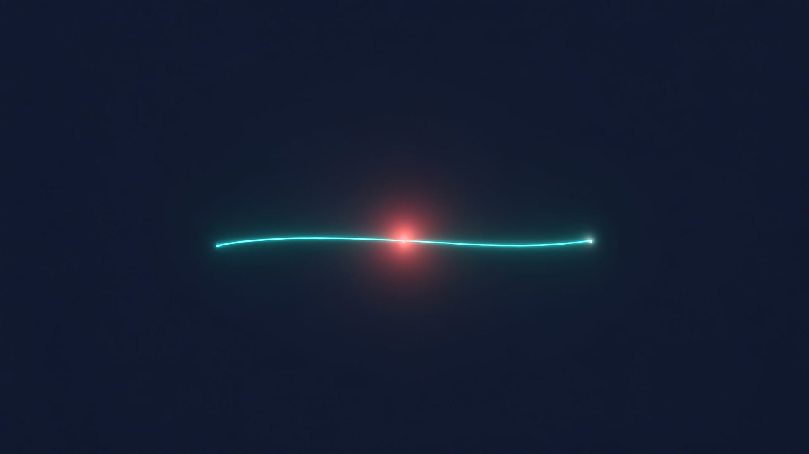

Antes de todo esto,
había una libreta
Planillas a mano. Un clip para no perder la hoja. Una corrección en rojo sobre el número que no cuadraba. Así seguía operando, hasta hace muy poco, casi cualquier pyme de servicios: un cuaderno WhatsApp, un Excel y la memoria de una sola persona sosteniendo el proceso completo.
Si esto se parece a tu negocio, sigue leyendo. La línea de abajo es la misma en las seis épocas: solo cambia la herramienta con la que se traza.
PENDIENTE
Ningún cambio serio empieza por la solución. Empieza por leer el proceso real, paso a paso, sin apurarse a la respuesta.
Compraste una herramienta. Ahora tienes dos problemas.
Una herramienta potente que tu equipo nunca aprende a usar es dinero tirado. El software genérico promete resolverlo todo y termina siendo una pestaña más que alguien tiene que aprender, mantener y explicarle al resto.
Soluciones de automatización empresarial de siguiente generación
Empodera a tu equipo con una plataforma robusta, escalable y centrada en el cliente. Agenda una demo con nuestro equipo de éxito.
Escalable
Crece con tu negocio en cualquier etapa del journey.
Innovador
Tecnología de punta impulsada por inteligencia artificial.
Centrado en el cliente
Diseñado pensando en la experiencia del usuario final.
Así se ve la mayoría de las plantillas de automatización. Todas prometen lo mismo, con las mismas tres palabras. Sigamos.
La misma línea, por fin trazada con precisión
Después de cuatro décadas de ruido, esto es lo que construimos: procesos diagnosticados de verdad, automatizados a la medida de cada cliente, con alguien real respondiendo después de la entrega.

Leemos tu proceso actual antes de proponer nada, como en el capítulo 1, pero sin las cuatro décadas de espera.
Sin plantillas genéricas ni curva de aprendizaje forzada, como en el capítulo 3.
Seguimos ahí cuando tu proceso cambia, no solo el día del lanzamiento.
Tu proceso es el próximo punto de esta línea
Del papel al pixel, la línea nunca dejó de trazarse. Le tocó a la máquina de escribir, le tocó al cursor parpadeante, le tocó al neón, le tocó a las tarjetas azules. Ahora te toca a ti.